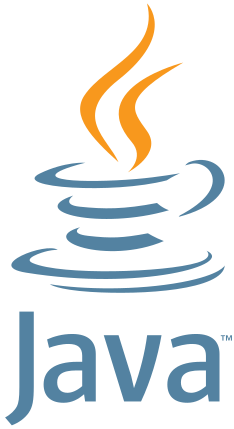

Основные особенности Java
Java — объектно-ориентированный язык с Си-подобным синтаксисом. Основные его особенности:
- Платформонезависимость — код работает на любой ОС через виртуальную машину JVM.
- Строгая типизация — явное объявление типов для предотвращения ошибок.
- Автоматическое управление памятью — сборщик мусора освобождает память от неиспользуемых объектов.
- Объектно-ориентированный подход — классы, наследование, полиморфизм.
- Безопасность — контроль доступа к памяти и ограничение вредоносного кода.
Сравнение с другими языками
| Особенность | Java | C# | C++ | Python | JavaScript |
|---|---|---|---|---|---|
| Типизация | Статическая | Статическая | Статическая | Динамическая | Динамическая |
| Платформонезависимость | Да (JVM) | Да (.NET) | Нет | Да (интерпретатор) | Да (браузер/Node.js) |
| Управление памятью | Автоматическое (сборщик мусора) | Автоматическое | Ручное | Автоматическое | Автоматическое |
| Синтаксис | Консервативный | Лаконичный | Сложный | Читабельный | Гибкий |
Ключевые отличия
Java vs C#
Java и C# оба платформонезависимы, но C# ориентирован на .NET-экосистему. Java имеет более консервативный синтаксис, C# — современные функции (например, pattern matching).
Java vs C++
Java упрощает разработку за счет автоматического управления памятью, C++ требует ручного контроля, но обеспечивает низкоуровневую оптимизацию.
Java vs Python
Java быстрее благодаря компиляции в байт-код, Python — проще для начинающих. Java подходит для корпоративных систем, Python — для анализа данных.
Java vs JavaScript
Java статически типизирован и ориентирован на серверные приложения, JavaScript — динамичен и используется для клиентской веб-разработки.
Примеры кода
Java
public class Greeter {
public static void greet(String name) {
System.out.println("Привет, " + name + "!");
}
}
C#
using System;
class Greeter {
public static void Greet(string name) {
Console.WriteLine($"Привет, {name}!");
}
}
C++
#include <iostream>
using namespace std;
void greet(string name) {
cout << "Привет, " << name << "!";
}
Python
def greet(name):
print(f"Привет, {name}!")
JavaScript
function greet(name) {
console.log(`Привет, ${name}!`);
}